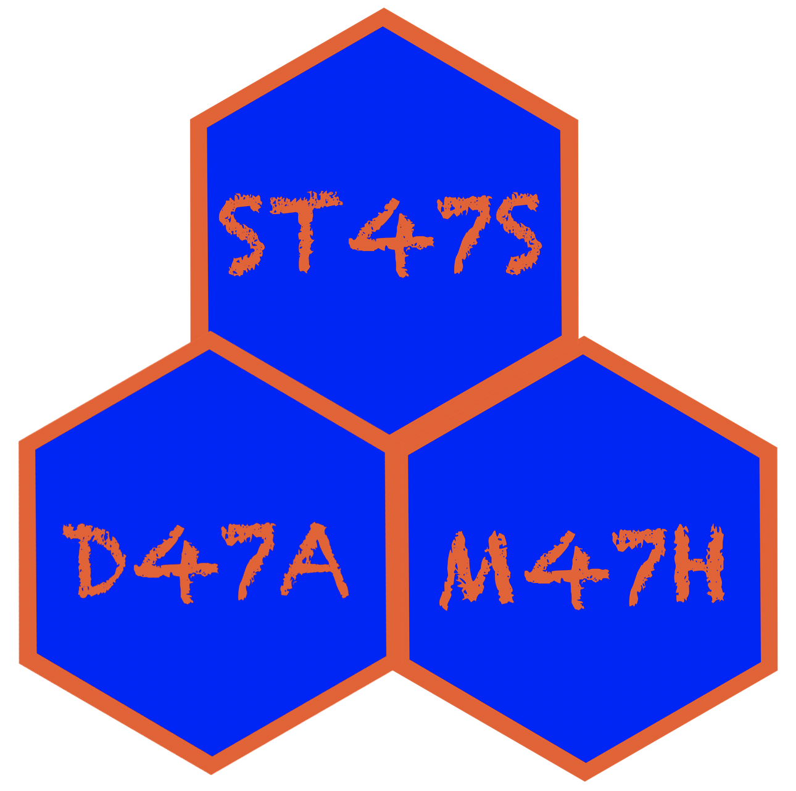

| Table | Non_unique | Key_name | Seq_in_index | Column_name | Collation | Cardinality | Sub_part | Packed | Null | Index_type | Comment | Index_comment |
|---|---|---|---|---|---|---|---|---|---|---|---|---|
| planes | 0 | PRIMARY | 1 | tailnum | A | 3322 | BTREE |
2024-01-18
The examples below use the airlines database, including the flights, carriers, airports, and planes tables.
Reconsider this analogy:
Each library (
database) has books (tables). Each book (table) has pages (rows). Each page (row) has a unique page number to identify it (keyvalue); to find a particular page, you sort through the page numbers (keyvalues). But it isn’t immediately obvious where the particular page of interest is, you might have to page through the book a little bit to find the page of interest. It would be easier if you had several bookmarks throughout the book to anchor some of the page numbers. For example, if you want page 1047 and you have a bookmark on page 1050, you only have to turn back three pages. The bookmark is anindex, it helps you find the desired rows much more quickly.1
KEYsKeys are unique identifiers for each row, used primarily for connecting tables. Keys are generally not helpful for efficiency, but they are important for data integrity and relationships between tables. A key is a pointer that identifies a record. In practice, a key is one or more columns that are earmarked to uniquely identify a record in a table. Keys serve two main purposes:
INDEXesBy indexing the rows, SQL is able to optimize sorting and joining tables.
The index is created in advance (when the table is created) and saved to disk, which can take up substantial space on the disk.
Sometimes more than one variable is used to index the table.
There are trade-offs to having a lot of indexes (disk space but fast wrangling) versus a few indexes (slow wrangling but less space).
A table may have more than one index but you shouldn’t add indexes to every column in a table, as these have to be updated for every addition/update/delete to the column.
Indexes should be added to columns that are frequently included in queries.
SHOW INDEXESNotice that the planes table has a single PRIMARY key. That primary key is used to index the table. The flights table has no PRIMARY key, but it does have six different indexes: Year, Date, Origin, Dest, Carrier, and tailNum.
| Table | Non_unique | Key_name | Seq_in_index | Column_name | Collation | Cardinality | Sub_part | Packed | Null | Index_type | Comment | Index_comment |
|---|---|---|---|---|---|---|---|---|---|---|---|---|
| planes | 0 | PRIMARY | 1 | tailnum | A | 3322 | BTREE |
| Table | Non_unique | Key_name | Seq_in_index | Column_name | Collation | Cardinality | Sub_part | Packed | Null | Index_type | Comment | Index_comment |
|---|---|---|---|---|---|---|---|---|---|---|---|---|
| flights | 1 | Year | 1 | year | A | 7 | YES | BTREE | ||||
| flights | 1 | Date | 1 | year | A | 7 | YES | BTREE | ||||
| flights | 1 | Date | 2 | month | A | 89 | YES | BTREE | ||||
| flights | 1 | Date | 3 | day | A | 2712 | YES | BTREE | ||||
| flights | 1 | Origin | 1 | origin | A | 2267 | BTREE | |||||
| flights | 1 | Dest | 1 | dest | A | 2267 | BTREE | |||||
| flights | 1 | Carrier | 1 | carrier | A | 134 | BTREE | |||||
| flights | 1 | tailNum | 1 | tailnum | A | 37862 | YES | BTREE |
SHOW INDEXESThe values output by SHOW INDEXES are:1
Table: The name of the table.
Non_unique: 0 if the index cannot contain duplicates, 1 if it can.
Key_name: The name of the index. If the index is the primary key, the name is always PRIMARY.
Seq_in_index: The column sequence number in the index, starting with 1.
Column_name: The column name. See also the description for the Expression column.
Collation: How the column is sorted in the index. This can have values A (ascending), D (descending), or NULL (not sorted).
Cardinality: An estimate of the number of unique values in the index.
Sub_part: The index prefix. That is, the number of indexed characters if the column is only partly indexed, NULL if the entire column is indexed.
Packed: Indicates how the key is packed. NULL if it is not.
Null: Contains YES if the column may contain NULL values and ’’ if not.
Index_type: The index method used (BTREE, FULLTEXT, HASH, RTREE).
Comment: Information about the index not described in its own column, such as disabled if the index is disabled.
Index_comment: Any comment provided for the index with a COMMENT attribute when the index was created.
Another way to speed up query retrievals is to partition the data tables. If, for example, the SNL queries were always done by year, then the episodes table could be partitioned such that they are stored as separate tables (one per year). The partitioning functions as an index on year. The user would not be able to tell the difference between the unpartitioned episodes table and the partitioned one. However, queries done by year would be faster. Queries done grouped in another way would be slower.
Indexes are built to accommodate the specific queries that are most likely to be run. However, you might not know which queries are going to be run, so it isn’t always obviously how to index a table.
| Table | Non_unique | Key_name | Seq_in_index | Column_name | Collation | Cardinality | Sub_part | Packed | Null | Index_type | Comment | Index_comment |
|---|---|---|---|---|---|---|---|---|---|---|---|---|
| flights | 1 | Year | 1 | year | A | 7 | YES | BTREE | ||||
| flights | 1 | Date | 1 | year | A | 7 | YES | BTREE | ||||
| flights | 1 | Date | 2 | month | A | 89 | YES | BTREE | ||||
| flights | 1 | Date | 3 | day | A | 2712 | YES | BTREE | ||||
| flights | 1 | Origin | 1 | origin | A | 2267 | BTREE | |||||
| flights | 1 | Dest | 1 | dest | A | 2267 | BTREE | |||||
| flights | 1 | Carrier | 1 | carrier | A | 134 | BTREE | |||||
| flights | 1 | tailNum | 1 | tailnum | A | 37862 | YES | BTREE |
EXPLAIN with distanceEXPLAIN communicates how onerous the query is, without actually running it—saving you the time of having to wait for it to execute.
| id | select_type | table | partitions | type | possible_keys | key | key_len | ref | rows | filtered | Extra |
|---|---|---|---|---|---|---|---|---|---|---|---|
| 1 | SIMPLE | flights | p1,p2,p3,p4,p5,p6,p7,p8,p9,p10,p11,p12,p13,p14,p15,p16,p17,p18,p19,p20,p21,p22,p23,p24,p25,p26,p27,p28,p29,p30,p31,p32 | ALL | 47932811 | 33.3 | Using where |
If we were to run a query for long flights using the distance column the server will have to inspect each of the 48 million rows, because distance is not indexed. A query on a non-indexed variable is the slowest possible search and is often called a table scan. The 48 million number that you see in the rows column is an estimate of the number of rows that MySQL will have to consult in order to process your query. In general, more rows mean a slower query.
EXPLAIN with yearA search for recent flights using the year column, which has an index built on it, considers many fewer rows (about 6.3 million, those flights in 2013).
Cardinality x rowsThe Cardinality from SHOW INDEXES times the rows from EXPLAIN is roughly the total number of rows in the dataframe.
EXPLAIN with year and monthIn a search by year and month, SQL uses the Date index. Only 700,000 rows are searched, those in June of 2013.
EXPLAIN with monthIf we search for particular months across all years, the indexing does not help at all. The query results in a table scan.
| id | select_type | table | partitions | type | possible_keys | key | key_len | ref | rows | filtered | Extra |
|---|---|---|---|---|---|---|---|---|---|---|---|
| 1 | SIMPLE | flights | p1,p2,p3,p4,p5,p6,p7,p8,p9,p10,p11,p12,p13,p14,p15,p16,p17,p18,p19,p20,p21,p22,p23,p24,p25,p26,p27,p28,p29,p30,p31,p32 | ALL | 47932811 | 10 | Using where |
Although month is part of the Date index, it is the second column in the index, and thus it doesn’t help us when we aren’t filtering on year. Thus, if it were common for our users to search on month without year, it would probably be worth building an index on month. Were we to actually run these queries, there would be a significant difference in computational time.
EXPLAIN with JOIN - fasterThe cardinality of the index on tailnum is large (the number of rows in flights associated with each unique value of tailnum is small).
EXPLAIN
SELECT * FROM planes p
LEFT JOIN flights o ON p.tailnum = o.TailNum
WHERE manufacturer = 'BOEING';| id | select_type | table | partitions | type | possible_keys | key | key_len | ref | rows | filtered | Extra |
|---|---|---|---|---|---|---|---|---|---|---|---|
| 1 | SIMPLE | p | ALL | 3322 | 10 | Using where | |||||
| 1 | SIMPLE | o | p1,p2,p3,p4,p5,p6,p7,p8,p9,p10,p11,p12,p13,p14,p15,p16,p17,p18,p19,p20,p21,p22,p23,p24,p25,p26,p27,p28,p29,p30,p31,p32 | ref | tailNum | tailNum | 9 | airlines.p.tailnum | 1266 | 100 |
EXPLAIN with JOIN - sloweryear is small (the number of rows in flights associated with each unique year is large).EXPLAIN
SELECT * FROM planes p
LEFT JOIN flights o ON p.Year = o.Year
WHERE manufacturer = 'BOEING';| id | select_type | table | partitions | type | possible_keys | key | key_len | ref | rows | filtered | Extra |
|---|---|---|---|---|---|---|---|---|---|---|---|
| 1 | SIMPLE | p | ALL | 3322 | 10 | Using where | |||||
| 1 | SIMPLE | o | p1,p2,p3,p4,p5,p6,p7,p8,p9,p10,p11,p12,p13,p14,p15,p16,p17,p18,p19,p20,p21,p22,p23,p24,p25,p26,p27,p28,p29,p30,p31,p32 | ref | Year,Date | Year | 3 | airlines.p.year | 6450117 | 100 | Using where |
As mentioned previously, dbplyr doesn’t translate every R command into SQL. After all, SQL is not a statistical software and doesn’t, for example, have a mechanism for creating data visualizations. To track which R commands are connected to SQL see the dbplyr reference sheet.
Let’s start with an example, calculating the median altitude in the airports table.1
# Source: SQL [6 x 9]
# Database: mysql [mdsr_public@mdsr.cdc7tgkkqd0n.us-east-1.rds.amazonaws.com:NA/airlines]
faa name lat lon alt tz dst city country
<chr> <chr> <dbl> <dbl> <int> <int> <chr> <chr> <chr>
1 04G Lansdowne Airport 41.1 -80.6 1044 -5 A Youn… United…
2 06A Moton Field Municipal Airpo… 32.5 -85.7 264 -6 A Tusk… United…
3 06C Schaumburg Regional 42.0 -88.1 801 -6 A Scha… United…
4 06N Randall Airport 41.4 -74.4 523 -5 A Midd… United…
5 09J Jekyll Island Airport 31.1 -81.4 11 -5 A Jeky… United…
6 0A9 Elizabethton Municipal Airp… 36.4 -82.2 1593 -5 A Eliz… United…It looks like show_query() is providing SQL code for calculating the median!
But when the SQL code is run, it doesn’t seem to work.
What happens when we computer the median on the tbl?
Error in `collect()`:
! Failed to collect lazy table.
Caused by error:
! You have an error in your SQL syntax; check the manual that corresponds to your MySQL server version for the right syntax to use near 'GROUP (ORDER BY `alt`) AS `med_alt`
FROM `airports`
LIMIT 7' at line 1 [1064]How can the median be calculated in SQL?
Let’s break down what the code is doing… First, set the row_index to -1 and iterate through by adding +1 for each row. Then concatenate the row_index information onto our table of interest. (Basically, create a column that gives a row value to the dataset, sorted by altitude.)
Next, filter the data to include only the middle row or two rows.
The last step is to average the middle row(s). If only one row is pulled out in the previous query, then only one row will be averaged (which the computer does happily).
Take-aways:
dbplyr is not able to translate the median() function into SQL.
The median is actually really hard to calculate! In particular, it is hard to calculate the median in one pass through the data.
CASE WHEN and ifelse()Consider the various R functions that create new variables based on an original variable.
# Source: SQL [5 x 10]
# Database: mysql [mdsr_public@mdsr.cdc7tgkkqd0n.us-east-1.rds.amazonaws.com:NA/airlines]
faa name lat lon alt tz dst city country sea
<chr> <chr> <dbl> <dbl> <int> <int> <chr> <chr> <chr> <chr>
1 04G Lansdowne Airport 41.1 -80.6 1044 -5 A Youn… United… abov…
2 06A Moton Field Municipal… 32.5 -85.7 264 -6 A Tusk… United… near…
3 06C Schaumburg Regional 42.0 -88.1 801 -6 A Scha… United… abov…
4 06N Randall Airport 41.4 -74.4 523 -5 A Midd… United… abov…
5 09J Jekyll Island Airport 31.1 -81.4 11 -5 A Jeky… United… near…CASE WHEN and ifelse()CASE WHEN and ifelse()SELECT *,
CASE WHEN (`alt` > 500.0) THEN 'above sea' WHEN NOT (`alt` > 500.0) THEN 'near sea' END AS `sea`
FROM `airports`
LIMIT 5;| faa | name | lat | lon | alt | tz | dst | city | country | sea |
|---|---|---|---|---|---|---|---|---|---|
| 04G | Lansdowne Airport | 41.1 | -80.6 | 1044 | -5 | A | Youngstown | United States | above sea |
| 06A | Moton Field Municipal Airport | 32.5 | -85.7 | 264 | -6 | A | Tuskegee | United States | near sea |
| 06C | Schaumburg Regional | 42.0 | -88.1 | 801 | -6 | A | Schaumburg | United States | above sea |
| 06N | Randall Airport | 41.4 | -74.4 | 523 | -5 | A | Middletown | United States | above sea |
| 09J | Jekyll Island Airport | 31.1 | -81.4 | 11 | -5 | A | Jekyll Island | United States | near sea |
CASE WHEN and case_when()airports |>
mutate(sea = case_when(
alt < 500 ~ "near sea",
alt < 2000 ~ "low alt",
alt < 3000 ~ "mod alt",
alt < 5500 ~ "high alt",
alt > 5500 ~ "extreme alt")) |>
head(5)# Source: SQL [5 x 10]
# Database: mysql [mdsr_public@mdsr.cdc7tgkkqd0n.us-east-1.rds.amazonaws.com:NA/airlines]
faa name lat lon alt tz dst city country sea
<chr> <chr> <dbl> <dbl> <int> <int> <chr> <chr> <chr> <chr>
1 04G Lansdowne Airport 41.1 -80.6 1044 -5 A Youn… United… low …
2 06A Moton Field Municipal… 32.5 -85.7 264 -6 A Tusk… United… near…
3 06C Schaumburg Regional 42.0 -88.1 801 -6 A Scha… United… low …
4 06N Randall Airport 41.4 -74.4 523 -5 A Midd… United… low …
5 09J Jekyll Island Airport 31.1 -81.4 11 -5 A Jeky… United… near…CASE WHEN and case_when()cw_query <- airports |>
mutate(sea = case_when(
alt < 500 ~ "near sea",
alt < 2000 ~ "low alt",
alt < 3000 ~ "mod alt",
alt < 5500 ~ "high alt",
alt > 5500 ~ "extreme alt"))
show_query(cw_query)<SQL>
SELECT
*,
CASE
WHEN (`alt` < 500.0) THEN 'near sea'
WHEN (`alt` < 2000.0) THEN 'low alt'
WHEN (`alt` < 3000.0) THEN 'mod alt'
WHEN (`alt` < 5500.0) THEN 'high alt'
WHEN (`alt` > 5500.0) THEN 'extreme alt'
END AS `sea`
FROM `airports`CASE WHEN and case_when()SELECT
*,
CASE
WHEN (`alt` < 500.0) THEN 'near sea'
WHEN (`alt` < 2000.0) THEN 'low alt'
WHEN (`alt` < 3000.0) THEN 'mod alt'
WHEN (`alt` < 5500.0) THEN 'high alt'
WHEN (`alt` > 5500.0) THEN 'extreme alt'
END AS `sea`
FROM `airports`
LIMIT 5;| faa | name | lat | lon | alt | tz | dst | city | country | sea |
|---|---|---|---|---|---|---|---|---|---|
| 04G | Lansdowne Airport | 41.1 | -80.6 | 1044 | -5 | A | Youngstown | United States | low alt |
| 06A | Moton Field Municipal Airport | 32.5 | -85.7 | 264 | -6 | A | Tuskegee | United States | near sea |
| 06C | Schaumburg Regional | 42.0 | -88.1 | 801 | -6 | A | Schaumburg | United States | low alt |
| 06N | Randall Airport | 41.4 | -74.4 | 523 | -5 | A | Middletown | United States | low alt |
| 09J | Jekyll Island Airport | 31.1 | -81.4 | 11 | -5 | A | Jekyll Island | United States | near sea |
CASE WHEN and cut()airports |>
mutate(sea = cut(
alt,
breaks = c(-Inf, 500, 2000, 3000, 5500, Inf),
labels = c("near sea", "low alt", "mod alt", "high alt", "extreme alt")
)
)|>
head(5)# Source: SQL [5 x 10]
# Database: mysql [mdsr_public@mdsr.cdc7tgkkqd0n.us-east-1.rds.amazonaws.com:NA/airlines]
faa name lat lon alt tz dst city country sea
<chr> <chr> <dbl> <dbl> <int> <int> <chr> <chr> <chr> <chr>
1 04G Lansdowne Airport 41.1 -80.6 1044 -5 A Youn… United… low …
2 06A Moton Field Municipal… 32.5 -85.7 264 -6 A Tusk… United… near…
3 06C Schaumburg Regional 42.0 -88.1 801 -6 A Scha… United… low …
4 06N Randall Airport 41.4 -74.4 523 -5 A Midd… United… low …
5 09J Jekyll Island Airport 31.1 -81.4 11 -5 A Jeky… United… near…CASE WHEN and cut()cw_query <- airports |>
mutate(sea = cut(
alt,
breaks = c(-Inf, 500, 2000, 3000, 5500, Inf),
labels = c("near sea", "low alt", "mod alt", "high alt", "extreme alt")
)
)
show_query(cw_query)<SQL>
SELECT
*,
CASE
WHEN (`alt` <= 500.0) THEN 'near sea'
WHEN (`alt` <= 2000.0) THEN 'low alt'
WHEN (`alt` <= 3000.0) THEN 'mod alt'
WHEN (`alt` <= 5500.0) THEN 'high alt'
WHEN (`alt` > 5500.0) THEN 'extreme alt'
END AS `sea`
FROM `airports`CASE WHEN and cut()SELECT
*,
CASE
WHEN (`alt` <= 500.0) THEN 'near sea'
WHEN (`alt` <= 2000.0) THEN 'low alt'
WHEN (`alt` <= 3000.0) THEN 'mod alt'
WHEN (`alt` <= 5500.0) THEN 'high alt'
WHEN (`alt` > 5500.0) THEN 'extreme alt'
END AS `sea`
FROM `airports`
LIMIT 5;| faa | name | lat | lon | alt | tz | dst | city | country | sea |
|---|---|---|---|---|---|---|---|---|---|
| 04G | Lansdowne Airport | 41.1 | -80.6 | 1044 | -5 | A | Youngstown | United States | low alt |
| 06A | Moton Field Municipal Airport | 32.5 | -85.7 | 264 | -6 | A | Tuskegee | United States | near sea |
| 06C | Schaumburg Regional | 42.0 | -88.1 | 801 | -6 | A | Schaumburg | United States | low alt |
| 06N | Randall Airport | 41.4 | -74.4 | 523 | -5 | A | Middletown | United States | low alt |
| 09J | Jekyll Island Airport | 31.1 | -81.4 | 11 | -5 | A | Jekyll Island | United States | near sea |
distinct()How many distinct time zones are there in the airports table?
distinct()How many distinct time zones are there in the airports table?
distinct()How many distinct time zones are there in the airports table?
LIMIT as head()# Source: SQL [5 x 9]
# Database: mysql [mdsr_public@mdsr.cdc7tgkkqd0n.us-east-1.rds.amazonaws.com:NA/airlines]
faa name lat lon alt tz dst city country
<chr> <chr> <dbl> <dbl> <int> <int> <chr> <chr> <chr>
1 04G Lansdowne Airport 41.1 -80.6 1044 -5 A Youn… United…
2 06A Moton Field Municipal Airpo… 32.5 -85.7 264 -6 A Tusk… United…
3 06C Schaumburg Regional 42.0 -88.1 801 -6 A Scha… United…
4 06N Randall Airport 41.4 -74.4 523 -5 A Midd… United…
5 09J Jekyll Island Airport 31.1 -81.4 11 -5 A Jeky… United…LIMIT as head()LIMIT as head()| faa | name | lat | lon | alt | tz | dst | city | country |
|---|---|---|---|---|---|---|---|---|
| 04G | Lansdowne Airport | 41.1 | -80.6 | 1044 | -5 | A | Youngstown | United States |
| 06A | Moton Field Municipal Airport | 32.5 | -85.7 | 264 | -6 | A | Tuskegee | United States |
| 06C | Schaumburg Regional | 42.0 | -88.1 | 801 | -6 | A | Schaumburg | United States |
| 06N | Randall Airport | 41.4 | -74.4 | 523 | -5 | A | Middletown | United States |
| 09J | Jekyll Island Airport | 31.1 | -81.4 | 11 | -5 | A | Jekyll Island | United States |
ggplot()ggplot()ggplot()dbplyr is awesome and can often be helpful in figuring out SQL syntax
sometimes dbplyr will provide SQL syntax that does not work (see the median example)
sometimes there is no SQL syntax to match the R task of interest (see ggplot)
It is always a good idea to terminate the SQL connection when you are done with it.
Pomona’s number is 47, and I wanted to have a 47th slide.
Figure 1: image credit: Jo Hardin